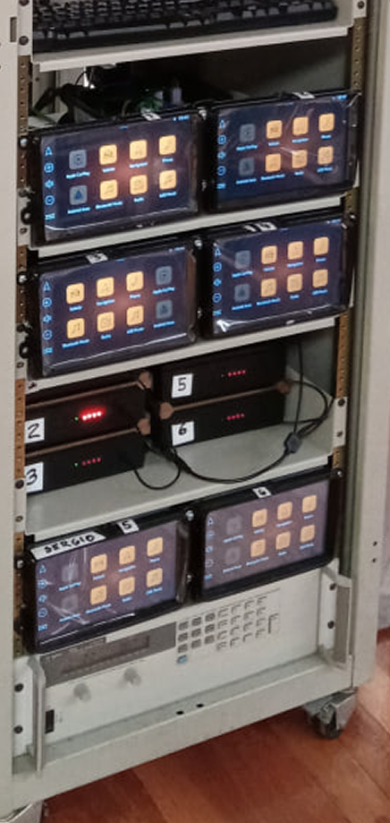

Project Overview
The Mirgor Monitoring System was an advanced hardware and software ecosystem built to validate Volkswagen Amarok and Saveiro infotainment systems (DUTs) for official laboratory certification. Acting as the lead technical QA Engineer, I designed the custom PCB, engineered the foundational firmware, and co-developed the physical packaging. The system replaced manual processes with a rugged, multi-channel data acquisition rig capable of simulating vehicle environments and monitoring electrical and audio performance in real time.
The Challenge
Automotive electronics require rigorous, long-term stress testing under extreme environmental conditions (such as temperature chambers) before receiving certification. The laboratory needed a scalable, high-density testing rig capable of autonomously executing complex test profiles, monitoring signal integrity, and detecting faults simultaneously across multiple units to eliminate human error and speed up validation.
My Impact & Key Contributions
1. Hardware Design & Instrumentation (Custom PCB & Enclosure)
To capture high-fidelity telemetry in a laboratory environment, I designed a custom instrumentation PCB from the ground up and collaborated on its physical integration.
-
ECAD Design: Developed the schematic and multi-layer PCB layout using CircuitMaker, leveraging the ESP32 microcontroller as the core compute engine.
-
Multi-Variable Telemetry: Engineered specialized circuitry on the board to measure critical real-time data, including battery voltage, current consumption, audio levels, and Total Harmonic Distortion (THD).
-
Automated Device Control: Integrated a CAN Bus transceiver on the board to allow direct command injection and state monitoring of the automotive units.
-
Rugged Mechanical Integration: Co-designed a dedicated housing featuring a heavy-duty CPC37 connector for the main vehicle harness, high-current connectors for the DUT battery power distribution, and a dedicated barrel jack to isolate power to the monitoring PCB.
2. Low-Level Embedded Software (First-Layer Firmware)
I developed the foundational firmware layer for the ESP32 node to bridge the gap between physical sensors, automotive networks, and higher-level automation software.
-
Developed low-latency data acquisition routines to accurately process and filter electrical and audio signals.
-
Implemented the CAN Bus communication stack to handle real-time vehicle simulation commands and state changes.
-
Created a lightweight data-streaming protocol to feed all telemetry up to a centralized Raspberry Pi hub via a multi-device architecture (supporting up to 6 nodes simultaneously).
3. Closed-Loop Automation & Fault Detection
The hardware infrastructure seamlessly integrated into a Python-driven master system. Because my firmware accurately captured device states and environmental factors (specifically temperature), the system operated on a smart, closed-loop feedback design. It instantly flagged device errors, allowing laboratory operators to pinpoint failures immediately and take swift corrective action during long-endurance certification cycles.
Technical Stack
-
Hardware Engineering: Custom PCB Design (CircuitMaker), Circuit Instrumentation, Power Distribution, Industrial Connectors (CPC37).
-
Embedded Firmware: ESP32 (C/C++), RTOS, Sensor Interfacing (ADC, I2C, I2S, SPI), Device Drivers.
-
Protocols & Architecture: CAN Bus (Controller Area Network), Automated Testing Infrastructure, Edge-to-Hub Telemetry.